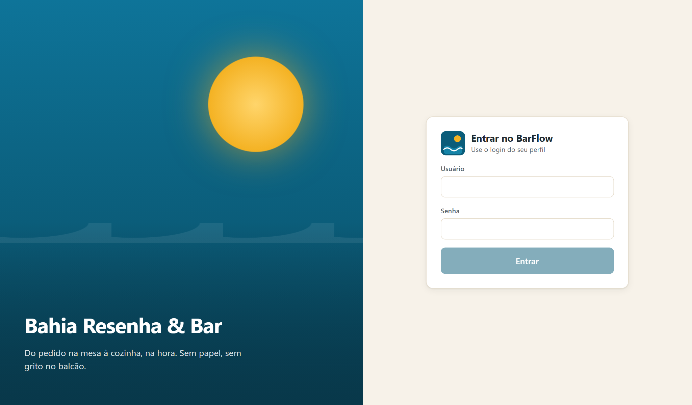
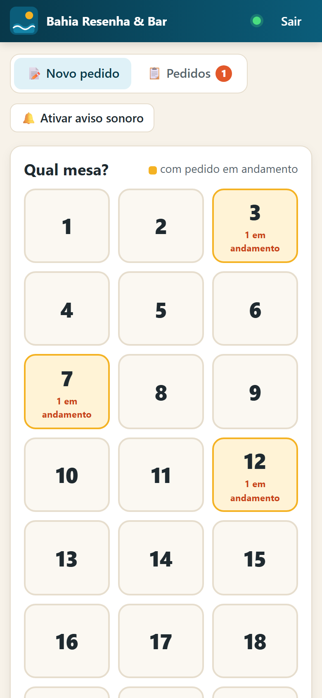
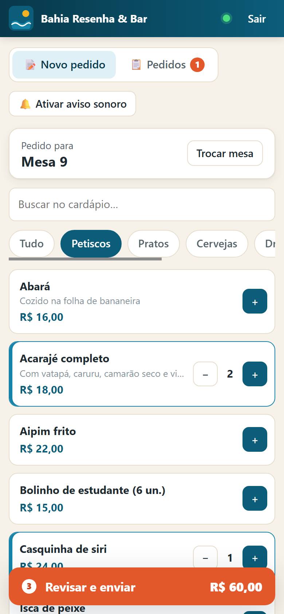
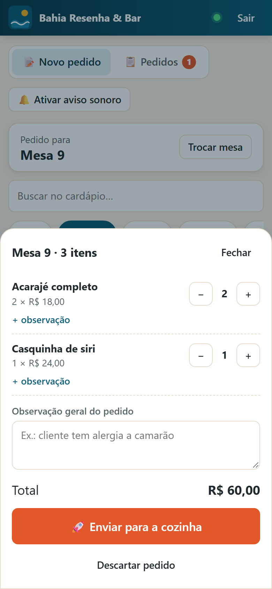
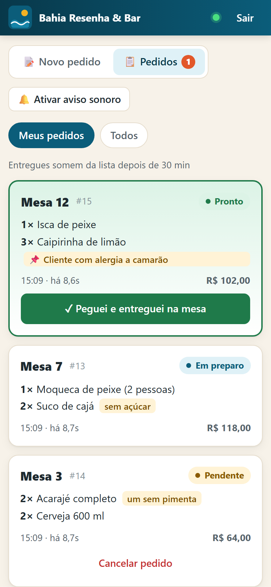
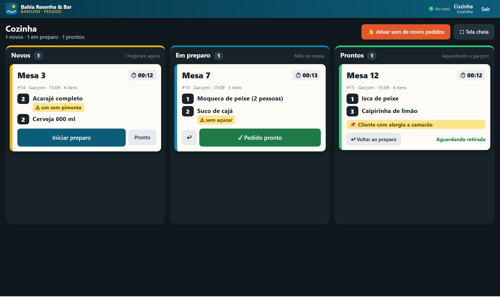
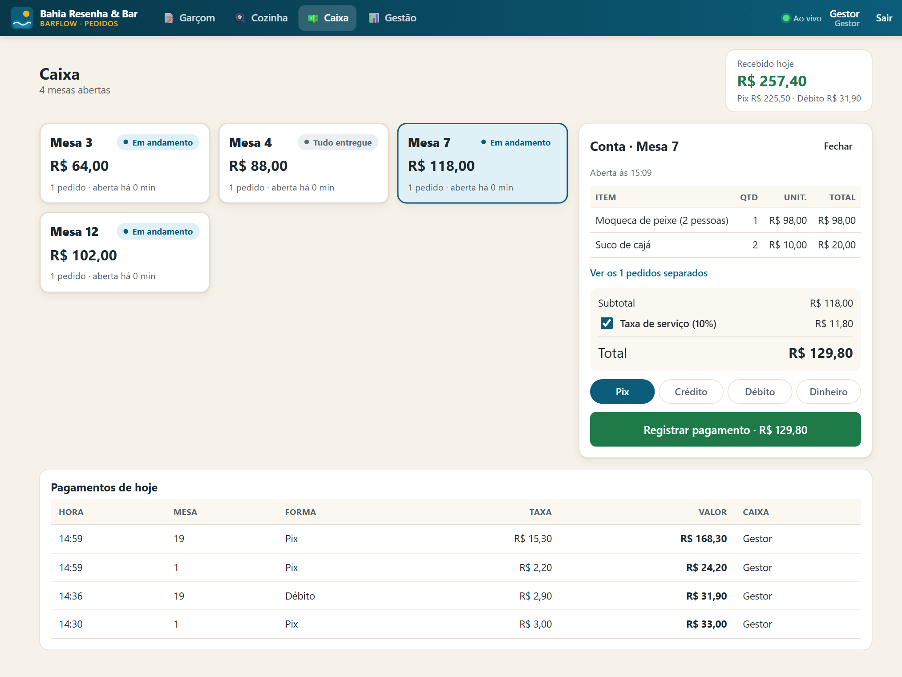
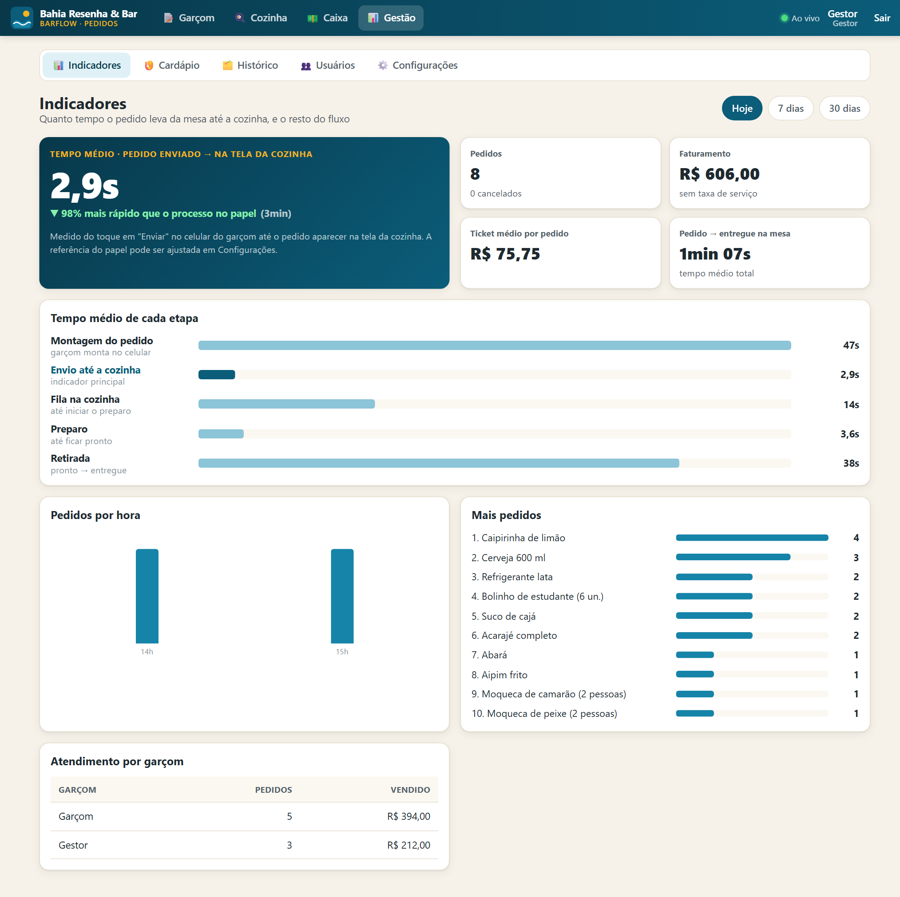
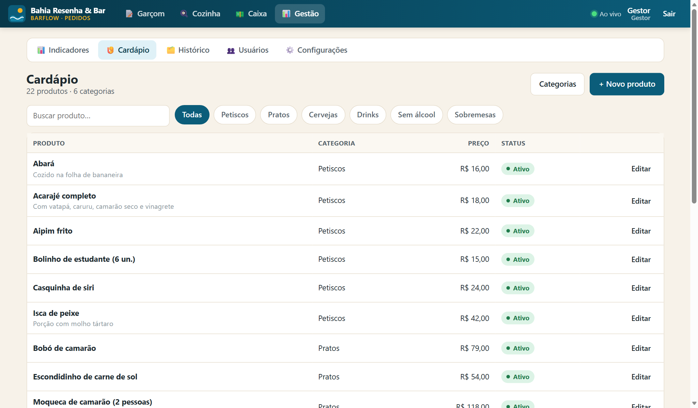
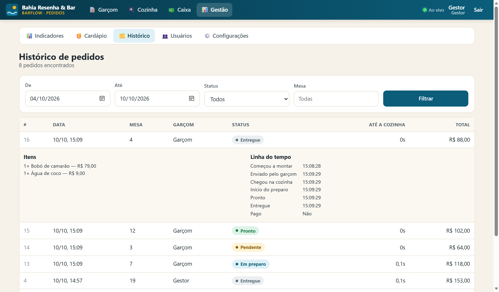

Todo o conteúdo técnico (requisitos, arquitetura, telas, testes executados) foi produzido a partir do sistema BarFlow já desenvolvido. Os trechos em amarelo dependem de informações que só a equipe possui (entrevistas, observações no bar, testes com os funcionários, nomes) e devem ser preenchidos antes da entrega. Conforme o guia da disciplina, nenhum resultado com usuários foi inventado.
No Bahia Resenha & Bar, os pedidos dos clientes são anotados pelos garçons em papel ou transmitidos verbalmente à cozinha. Esse fluxo depende de deslocamento físico até a cozinha, está sujeito a perda de comandas, erros de leitura e esquecimento de observações (como alergias ou "sem cebola"), e não deixa registro do tempo de atendimento.
O projeto desenvolveu o BarFlow, um sistema web acessado pelo navegador (celular, tablet ou computador) que conecta o garçom à cozinha em tempo real. O garçom seleciona a mesa e os produtos no celular; o pedido aparece imediatamente na tela da cozinha, que atualiza o andamento (pendente, em preparo, pronto); o garçom é avisado quando o pedido fica pronto; o caixa fecha a conta da mesa; e o gestor acompanha indicadores e histórico.
O indicador principal é o tempo entre o registro do pedido pelo garçom e sua disponibilização na cozinha, que o sistema mede automaticamente para cada pedido, permitindo a comparação com o processo anterior em papel.
| Etapa | Status | Observação |
|---|---|---|
| MVP funcional (D4 – desenvolvimento) | Concluído | Todas as funcionalidades previstas implementadas e testadas em ambiente de desenvolvimento. |
| Testes funcionais | Executados | Casos de teste da seção 11 executados em 10/10/2026. |
| Diagnóstico com o parceiro (D1) | [PREENCHER] | [PREENCHER: entrevistas/observações realizadas no bar] |
| Medição do processo em papel (linha de base) | [PREENCHER] | Necessária para comparar com o indicador do sistema. |
| Piloto com funcionários (validação) | [PREENCHER] | Ver plano na seção 10. |
O Bahia Resenha & Bar é um estabelecimento de alimentação e bebidas com atendimento em mesas, cardápio de petiscos, pratos típicos baianos (acarajé, moquecas, bobó), cervejas, drinks e bebidas sem álcool. O atendimento envolve garçons no salão, equipe de cozinha, caixa e a gestão do estabelecimento.
Em bares e restaurantes de pequeno porte, a comunicação entre salão e cozinha é um ponto crítico: cada ida do garçom até a cozinha é tempo fora do atendimento, comandas em papel podem ser perdidas ou mal interpretadas, e sem registros a gestão não consegue identificar gargalos. Uma solução digital simples, que funcione nos celulares que a equipe já possui e no navegador, sem instalação, atende a uma necessidade concreta sem exigir investimento alto.
O projeto aplica levantamento e priorização de requisitos, modelagem de processos (AS IS / TO BE), modelagem de dados, desenvolvimento web full stack (front-end, API, banco de dados), comunicação em tempo real, controle de acesso por perfil, testes e definição de indicadores, ou seja, o ciclo completo de Análise e Desenvolvimento de Sistemas aplicado a uma realidade local.
Que problema real estamos tentando resolver? A demora e os erros na transmissão de pedidos do salão para a cozinha. Para quem? Garçons e cozinha do Bahia Resenha & Bar e, por consequência, seus clientes. Com qual solução? Um sistema web de pedidos em tempo real. Com quais evidências diremos que houve melhoria? Comparando o tempo de chegada do pedido à cozinha antes e depois, além de taxa de conclusão de tarefas e satisfação dos usuários.
Desenvolver e validar, em parceria com o Bahia Resenha & Bar, um sistema web mínimo que substitua a transmissão de pedidos em papel ou verbal por um fluxo digital em tempo real entre garçons e cozinha, reduzindo o tempo de disponibilização dos pedidos e os erros de comunicação.
| Evitamos | Formulação adotada |
|---|---|
| "O bar precisa de um sistema." | "No Bahia Resenha & Bar, os pedidos são anotados em papel ou repassados verbalmente à cozinha, o que exige deslocamento do garçom, gera risco de perda ou erro de leitura das comandas e de esquecimento de observações, e não deixa registro do tempo entre o pedido e o preparo." |
| Causas | Consequências |
|---|---|
|
|
| Stakeholder | Interesse | Influência | Interesse | Estratégia de participação |
|---|---|---|---|---|
| Gestor / proprietário | Agilidade, menos erros, dados de desempenho | Alta | Alto | Gerenciar de perto: valida requisitos, aprova o piloto, define a linha de base |
| Garçons | Menos deslocamento, saber quando o pedido está pronto | Média | Alto | Envolver ativamente: entrevistas, testes de usabilidade no celular |
| Cozinha | Pedidos legíveis, ordem clara, observações visíveis | Média | Alto | Envolver ativamente: validar a tela da cozinha em horário real |
| Caixa | Conferência correta de itens e valores | Baixa | Médio | Manter informado e testar fechamento de conta |
| Clientes | Pedido correto e mais rápido | Baixa | Médio | Beneficiários indiretos; não usam o sistema |
| Equipe do projeto / professor | Entregar e validar o MVP | Alta | Alto | Reuniões e entregas D1–D6 |
Pontos de dor: deslocamento, comanda perdida/ilegível, observação esquecida, garçom não sabe quando está pronto, nenhum registro de tempo.
Em todas as etapas o sistema grava o horário, permitindo medir o tempo de cada fase.
| ID | Requisito | Perfil | Prioridade |
|---|---|---|---|
| RF01 | O sistema deve autenticar usuários por login e senha e direcionar cada um à tela do seu perfil. | Todos | Alta |
| RF02 | O gestor deve cadastrar, editar e desativar produtos com nome, descrição, preço e categoria. | Gestor | Alta |
| RF03 | O gestor deve cadastrar e ordenar categorias (ex.: petiscos, pratos, bebidas). | Gestor | Média |
| RF04 | O garçom deve registrar um pedido informando mesa, itens, quantidades e observações (por item e geral). | Garçom | Alta |
| RF05 | O pedido registrado deve ser disponibilizado automaticamente na tela da cozinha, sem recarregar a página. | Cozinha | Alta |
| RF06 | A cozinha deve visualizar pedidos pendentes, em preparo e prontos, com itens, observações e tempo decorrido. | Cozinha | Alta |
| RF07 | A cozinha deve alterar o status do pedido (pendente → em preparo → pronto) e desfazer a ação. | Cozinha | Alta |
| RF08 | O garçom deve acompanhar o status dos seus pedidos e ser avisado quando ficarem prontos. | Garçom | Alta |
| RF09 | O garçom deve marcar o pedido como entregue e cancelar pedidos próprios ainda pendentes. | Garçom | Média |
| RF10 | O sistema deve registrar os horários de criação, chegada à cozinha, início do preparo, pronto e entrega. | Sistema | Alta |
| RF11 | O caixa deve consultar as mesas com conta aberta, conferir itens e valores e registrar o pagamento (com taxa de serviço opcional). | Caixa | Média |
| RF12 | O gestor deve consultar o histórico de pedidos com filtros por período, status e mesa. | Gestor | Média |
| RF13 | O gestor deve visualizar indicadores, em especial o tempo médio entre registrar o pedido e disponibilizá-lo na cozinha. | Gestor | Alta |
| RF14 | O gestor deve gerenciar usuários e perfis e configurar nº de mesas, taxa de serviço e tempo de referência do processo anterior. | Gestor | Média |
| ID | Requisito | Como foi atendido |
|---|---|---|
| RNF01 | Interface responsiva para celular, tablet e computador. | Layout adaptável; tela do garçom pensada para celular (testada em 390 px de largura). |
| RNF02 | Acesso pelo navegador, sem instalação de aplicativo. | Aplicação web servida pela própria API na rede local. |
| RNF03 | Atualização em tempo real entre garçom e cozinha. | ASP.NET Core SignalR (WebSocket) com reconexão automática. |
| RNF04 | Exigir autenticação e respeitar permissões por perfil. | Token JWT; autorização por perfil no servidor (não só na tela). |
| RNF05 | Senhas armazenadas de forma segura. | Hash BCrypt; senhas nunca são gravadas em texto. |
| RNF06 | Preservar o histórico mesmo com mudanças no cardápio. | Nome e preço do produto copiados no item do pedido; produtos com histórico são desativados, não apagados. |
| RNF07 | Usabilidade em ambiente movimentado. | Botões grandes, tela da cozinha escura e de alto contraste, alertas sonoros e por vibração. |
| RNF08 | Tolerância a oscilação de Wi-Fi. | Indicador "Ao vivo/Offline" e recarga automática do estado após reconectar. |
| Elemento | Resposta |
|---|---|
| Problema | Pedidos transmitidos em papel ou verbalmente, com demora, erros e sem registro de tempos. |
| Beneficiários / usuários | Garçons, cozinha, caixa e gestor (usuários); clientes do bar (beneficiários indiretos). |
| Objetivo geral | Reduzir o tempo e os erros entre o pedido na mesa e sua chegada à cozinha. |
| Solução proposta | Sistema web BarFlow com pedidos em tempo real, controle de status, caixa, histórico e indicadores. |
| Funcionalidades principais | Registro de pedido no celular; tela da cozinha; status e avisos; fechamento de conta; indicadores. |
| Resultados esperados | Pedidos chegam à cozinha em segundos; menos idas à cozinha; menos pedidos errados; dados para gestão. |
| Indicadores | Tempo registro → cozinha (principal); conclusão de tarefas; erros; satisfação (1–5). |
| Parcerias / governança | Gestor do bar valida requisitos e decisões; equipe do projeto desenvolve e conduz testes. |
| Riscos | Wi-Fi instável; resistência à mudança; disponibilidade da equipe do bar no horário de pico. |
| Recursos | Computador do bar (servidor), roteador Wi-Fi existente, celulares dos garçons, 1 tela/tablet na cozinha; software livre ou gratuito. |
| Nível | Aplicação no projeto |
|---|---|
| Insumos | Equipe, notebooks, parceiro, Angular, ASP.NET Core, PostgreSQL, Docker, rede Wi-Fi do bar. |
| Atividades | Diagnóstico, requisitos, desenvolvimento, testes funcionais, piloto com os funcionários. |
| Produto | MVP do BarFlow funcionando na rede do bar. |
| Resultado | Pedidos disponíveis na cozinha mais rápido, menos erros e deslocamentos, registro dos tempos. |
| Impacto | Atendimento mais ágil e organizado e decisões de gestão baseadas em dados. |
Garçom registra o pedido → a regra de negócio valida mesa, produtos ativos e quantidades → o pedido é persistido no PostgreSQL → a cozinha recebe em tempo real e atualiza o status → o garçom consulta e entrega → o caixa fecha a conta → o gestor consulta histórico e indicadores.
| Dentro do MVP | Fora do escopo deste semestre |
|---|---|
|
|
Funcionalidades críticas: RF04, RF05, RF06, RF07 e RF10, que sustentam o indicador principal. Dependências: rede Wi-Fi do bar e um computador ligado durante o expediente.
| ID | História de usuário | Prior. | Critério de aceitação | Status |
|---|---|---|---|---|
| US01 | Como garçom, quero escolher a mesa e os produtos no celular para não precisar anotar em papel. | Alta | Pedido salvo com mesa, itens, quantidades e total corretos. | Feito |
| US02 | Como cozinheiro, quero ver os pedidos novos assim que forem feitos, para começar o preparo sem esperar o garçom. | Alta | Pedido aparece na tela da cozinha sem recarregar, com aviso sonoro. | Feito |
| US03 | Como cozinheiro, quero marcar o pedido como em preparo e pronto. | Alta | Status muda e todos os perfis veem a mudança em tempo real. | Feito |
| US04 | Como garçom, quero ser avisado quando meu pedido ficar pronto. | Alta | Aviso visual, sonoro e vibração; destaque na lista de pedidos. | Feito |
| US05 | Como garçom, quero registrar observações por item (ex.: "sem pimenta"). | Alta | Observação destacada no cartão da cozinha. | Feito |
| US06 | Como gestor, quero saber o tempo médio entre o registro e a chegada do pedido à cozinha. | Alta | Indicador calculado por período e comparado à referência do papel. | Feito |
| US07 | Como gestor, quero cadastrar produtos e preços. | Alta | Produto criado/alterado aparece no celular do garçom. | Feito |
| US08 | Como caixa, quero ver a conta consolidada da mesa e registrar o pagamento. | Média | Itens somados, taxa opcional, mesa liberada após pagamento. | Feito |
| US09 | Como gestor, quero consultar pedidos anteriores. | Média | Filtros por data, status e mesa retornam os registros corretos. | Feito |
| US10 | Como gestor, quero cadastrar funcionários com perfis diferentes. | Média | Cada perfil acessa somente suas telas e ações. | Feito |
| Período | Foco | Entrega | Situação |
|---|---|---|---|
| Semanas 1–2 | Diagnóstico no bar, stakeholders, requisitos iniciais | D1 | [ ] |
| Semanas 2–3 | Canvas, escopo do MVP, backlog, metas | D2 | [ ] |
| Semanas 3–4 | Plano de testes, indicadores, riscos | D3 | [ ] |
| Semanas 5–7 | Desenvolvimento do MVP | D4 | MVP pronto |
| Semanas 6–8 | Piloto no bar, coleta de dados, testes com usuários | Validação | [ ] |
| Semanas 8–9 | Consolidação técnica e resultados | D5 | [ ] |
| Semana 9 | Pitch e demonstração | D6 | [ ] |
O projeto usa apenas software gratuito ou de código aberto (Angular, .NET, PostgreSQL, Docker Desktop para uso pessoal/educacional) e equipamentos já existentes no bar: um computador como servidor local, o roteador Wi-Fi e os celulares dos garçons. Custo adicional opcional: um tablet ou monitor para a cozinha. [PREENCHER: custo estimado, se houver]
/hubs/ordersToda a solução roda em um único computador do bar, dentro da rede local: os aparelhos acessam http://IP-DO-COMPUTADOR:5204. Quando o garçom envia um pedido, a API grava no banco e publica o evento OrderCreated no hub SignalR; a tela da cozinha recebe o evento, exibe o pedido e responde com AcknowledgeOrders, momento em que o servidor grava KitchenReceivedAt, que é a base do indicador principal.
| Tecnologia | Justificativa |
|---|---|
| Angular 22 | Framework web completo, componentes e roteamento por perfil; sugerido na proposta do projeto. |
| ASP.NET Core 10 (C#) | API robusta, validação, autenticação/autorização integradas e SignalR nativo para tempo real. |
| SignalR | Envia pedidos à cozinha sem atualizar a página e reconecta sozinho em caso de queda de Wi-Fi. |
| PostgreSQL 17 | Banco relacional gratuito e confiável; adequado a pedidos, itens e relatórios por período. |
| Entity Framework Core | Mapeamento objeto-relacional e migrations versionadas do esquema do banco. |
| JWT + BCrypt | Sessão sem estado com perfis; senhas protegidas por hash. |
| Docker | Sobe o banco com um comando, igual em qualquer máquina da equipe. |
| Entidade | Principais atributos | Relacionamentos |
|---|---|---|
| User | Id, Name, Username (único), PasswordHash, Role (Garcom/Cozinha/Caixa/Gestor), Active | 1–N Order (garçom), 1–N Payment (caixa) |
| Category | Id, Name (único), SortOrder | 1–N Product |
| Product | Id, Name, Description, Price, Active | N–1 Category |
| Order | Id, TableNumber, Status, Notes, StartedAt, CreatedAt, KitchenReceivedAt, PreparationStartedAt, ReadyAt, DeliveredAt, CanceledAt | N–1 User; 1–N OrderItem; N–1 Payment |
| OrderItem | Id, ProductName e UnitPrice (cópia histórica), CategoryName, Quantity, Notes | N–1 Order; N–1 Product |
| Payment | Id, TableNumber, Amount, ServiceFee, Method (Dinheiro/Pix/Débito/Crédito), CreatedAt | N–1 User (caixa); 1–N Order |
| BarSettings | BarName, TableCount, ServiceFeePercent, BaselineSeconds (referência do papel) | Registro único |
Código organizado em backend/BarFlow.Api (Controllers, Domain, Data/Migrations, Hubs, Auth) e frontend/src/app (core, layout, pages). O esquema do banco é versionado por migrations do EF Core.
As telas abaixo foram capturadas do sistema em funcionamento, com dados de demonstração (pedidos criados apenas para ilustrar, sem clientes reais).





StartedAt).




Fórmula: média de (KitchenReceivedAt − CreatedAt) dos pedidos não cancelados do período.
CreatedAt = momento em que o garçom toca em "Enviar" e o servidor registra o pedido.
KitchenReceivedAt = momento em que a tela da cozinha confirma que o pedido apareceu.
Linha de base: tempo médio cronometrado no processo em papel (da anotação na mesa até a comanda chegar à cozinha), cadastrado em Gestão → Configurações.
| Indicador | Fórmula / unidade | Meta | Fonte | Periodicidade | Responsável |
|---|---|---|---|---|---|
| Tempo registro → cozinha | Média (s) | < 30 s e < linha de base | Sistema (Indicadores) | Diária no piloto | [nome] |
| Linha de base (papel) | Média cronometrada (s) | Medir ≥ [nº] pedidos | Observação + cronômetro | Antes do piloto | [nome] |
| Tempo de preparo | Média ReadyAt − PreparationStartedAt | Acompanhar | Sistema | Semanal | [nome] |
| Conclusão de tarefa | % usuários que concluem sem ajuda | ≥ 80% | Teste de usabilidade | Fim do piloto | [nome] |
| Erros críticos | Nº de falhas que impedem concluir | 0 | Registro de testes | A cada teste | [nome] |
| Satisfação | Média escala 1–5 | ≥ 4,0 | Questionário | Fim do piloto | [nome] |
| Pedidos com erro | Nº de pedidos trocados/esquecidos | Menor que antes | Relato da cozinha/gestor | Semanal | [nome] |
| Tarefa | Descrição | Perfil | Registrar |
|---|---|---|---|
| T1 | Entrar no sistema e registrar um pedido de 2 itens para a mesa 5, com uma observação. | Garçom | Concluiu? Tempo, erros, pedidos de ajuda |
| T2 | Receber o pedido, iniciar o preparo e marcar como pronto. | Cozinha | Percebeu o aviso? Concluiu? |
| T3 | Identificar que o pedido está pronto e marcar como entregue. | Garçom | Percebeu o aviso? Tempo |
| T4 | Fechar a conta da mesa 5 no Pix com taxa de serviço. | Caixa | Valor conferido corretamente? |
| T5 | Consultar o tempo médio até a cozinha de hoje. | Gestor | Encontrou e interpretou? |
Ao final, aplicar questionário breve (escala 1–5): facilidade de uso, clareza dos avisos, utilidade para o trabalho, e uma pergunta aberta "o que mudaria?". Coletar consentimento antes de registrar falas ou imagens.
Os casos abaixo foram executados com o sistema completo em funcionamento (API, banco PostgreSQL e front-end), usando duas sessões de navegador simultâneas para simular garçom e cozinha em aparelhos diferentes.
| Caso | Pré-condição / ação | Resultado esperado | Resultado |
|---|---|---|---|
| CT01 Login | Usuário "garcom" informa credenciais válidas. | Acesso concedido e redirecionado à tela do garçom. | Aprovado |
| CT02 Login inválido | Senha incorreta. | Mensagem "Usuário ou senha inválidos", sem acesso. | Aprovado |
| CT03 Registrar pedido | Garçom escolhe mesa, adiciona 2 acarajés e 1 cerveja, inclui observação e envia. | Pedido salvo com itens, quantidades, observação e total (R$ 50,00) corretos. | Aprovado |
| CT04 Tempo real | Tela da cozinha aberta em outra sessão no momento do envio. | Pedido aparece na cozinha sem recarregar a página. | Aprovado |
| CT05 Status | Cozinha clica "Iniciar preparo" e depois "Pedido pronto". | Status atualizado; garçom vê "Pronto" com destaque e contador. | Aprovado |
| CT06 Entrega | Garçom marca "entreguei". | Status "Entregue" e horário gravado. | Aprovado |
| CT07 Pagamento | Caixa fecha a conta da mesa no Pix com taxa de 10%. | Total R$ 55,00 (50 + 5); mesa sai da lista; pagamento listado no dia. | Aprovado |
| CT08 Permissão | Usuário "garcom" tenta acessar a rota de usuários do gestor pela API. | Acesso negado (HTTP 403). | Aprovado |
| CT09 Histórico | Gestor filtra pedidos do período. | Pedido listado com linha do tempo completa. | Aprovado |
| CT10 Celular | Tela do garçom em largura de celular (390 px) com itens no carrinho. | Nenhum elemento ultrapassa a largura da tela. | Aprovado após correção |
No CT04, o intervalo gravado entre o envio pelo garçom e a confirmação da tela da cozinha foi de 0,27 segundo, em rede local e com um único pedido. Esse número comprova que a medição funciona e indica o potencial da solução, mas não substitui a medição em uso real no bar, que deve ser registrada na seção 13.
| Risco | Prob. | Impacto | Mitigação / contingência |
|---|---|---|---|
| Queda ou instabilidade do Wi-Fi | Média | Alto | Reconexão automática, indicador "Ao vivo/Offline", pedidos ficam salvos no servidor; manter comanda de papel como contingência no piloto. |
| Computador servidor desligado | Média | Alto | Script de inicialização único (iniciar.ps1); orientar a equipe a ligá-lo na abertura. |
| Resistência dos funcionários à mudança | Média | Médio | Envolver garçons nos testes, treinamento curto, interface simples. |
| Indisponibilidade do parceiro para testes | Média | Alto | Agendar fora do horário de pico; ter mais de um contato. |
| Perda de dados | Baixa | Alto | Banco em volume persistente do Docker; backup periódico com pg_dump. |
| Acesso indevido | Baixa | Alto | Login obrigatório, perfis, troca das senhas padrão e da chave JWT antes do uso real. |
| Atraso no desenvolvimento | Baixa | Alto | MVP já concluído; novas funções só após o piloto. |
| Indicador | Antes (papel) | Com BarFlow | Meta | Atingiu? |
|---|---|---|---|---|
| Tempo registro → cozinha | [ ] | [ ] | < 30 s | [ ] |
| Conclusão da tarefa T1 sem ajuda | — | [ ] | ≥ 80% | [ ] |
| Satisfação média (1–5) | — | [ ] | ≥ 4,0 | [ ] |
| Erros críticos | — | [ ] | 0 | [ ] |
| Pedidos com erro/esquecidos | [ ] | [ ] | Reduzir | [ ] |
Evitar "os garçons gostaram do sistema". Preferir: "Dos N garçons, X registraram o pedido sem ajuda; o tempo até a cozinha caiu de A no papel para B no sistema; a satisfação média foi C/5."
| Produto tecnológico | Resultado que queremos observar no parceiro |
|---|---|
| Sistema de pedidos em tempo real (BarFlow) | Pedidos chegam à cozinha mais rápido e sem erro de leitura; garçons passam mais tempo no salão; a gestão passa a ter dados de tempo e volume de atendimento para decidir escalas e processos. |
Problema → Necessidade → Requisito → Funcionalidade → Teste → Indicador
| Problema | Requisito | Funcionalidade | Teste | Indicador |
|---|---|---|---|---|
| Demora para o pedido chegar à cozinha | RF04, RF05, RF10 | Registro no celular + envio em tempo real | CT03, CT04 | Tempo registro → cozinha |
| Comanda ilegível / observação esquecida | RF04, RF06 | Observação por item destacada na cozinha | CT03, T2 | Pedidos com erro |
| Garçom não sabe quando está pronto | RF07, RF08 | Status + aviso sonoro/vibração | CT05, T3 | Tempo de retirada (pronto → entregue) |
| Conta somada manualmente | RF11 | Caixa com conta consolidada | CT07, T4 | Conferência correta |
| Gestão sem dados | RF12, RF13 | Histórico e indicadores | CT09, T5 | Uso dos indicadores pelo gestor |
| Acesso indevido a funções | RNF04 | Perfis e autorização no servidor | CT08 | Tentativas bloqueadas |
Continuidade: o sistema roda em equipamento do próprio bar, sem custo de licença, e pode ser mantido pelo gestor com o script de inicialização documentado no README do projeto. [PREENCHER: acordo de continuidade com o parceiro, se houver]
Em atendimento à seção 14 do guia, registramos que o desenvolvimento do código, a estrutura deste documento e a captura das telas contaram com apoio de assistente de IA (Claude Code, da Anthropic). A equipe permanece responsável por:
| # | Conteúdo | Tempo |
|---|---|---|
| 1 | Problema, parceiro e público: o Bahia Resenha & Bar e os pedidos em papel. | 45 s |
| 2 | Evidências do diagnóstico (entrevistas, tempo cronometrado no papel) e requisitos críticos. | 45 s |
| 3 | Objetivo e solução: BarFlow, pedidos em tempo real pelo celular. | 45 s |
| 4 | MVP, arquitetura (Angular + ASP.NET Core + SignalR + PostgreSQL). | 1 min |
| 5 | Demonstração ao vivo: celular do garçom envia pedido → aparece na tela da cozinha com som → cozinha marca pronto → garçom recebe aviso → indicador atualizado. | 2–3 min |
| 6 | Testes e resultados: tabela antes × depois do piloto. | 2 min |
| 7 | Impacto, limitações e aprendizados. | 1 min |
| 8 | Próximos passos. | 45 s |
"Encontramos este problema real no Bahia Resenha & Bar; construímos o BarFlow; testamos desta forma; obtivemos estas evidências; aprendemos isto; e estes são os próximos passos."
gestor, garcom, cozinha, caixa (senhas padrão devem ser trocadas antes do uso real).iniciar.ps1 sobe banco, front-end e API; acesso em http://localhost:5204 e, na rede, http://IP-DO-COMPUTADOR:5204.